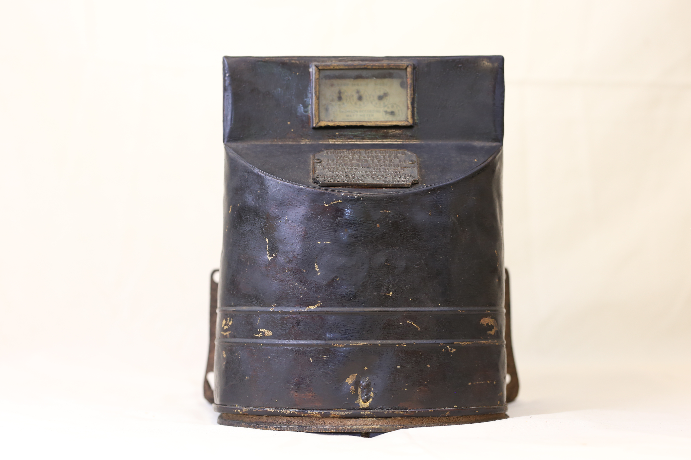
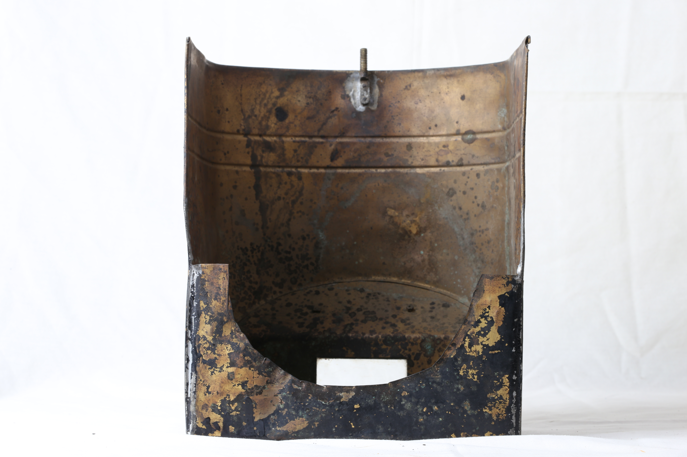

It is housed inside a black steel metal covering. This cover is severely rusted and rugged due to its age (was made between 1891 and 1895). The middle section of the front part is transparent, making the writings on a golden metal piece inside, to be visible.The backside cover is missing, and to access the inside, you just lift the black cover. The inside is also rusty and dusty. The base is mostly made of brass/bronze which makes it heavy, definitely over 20 pounds. Inside, there are two big coils and between them is a smaller coil, possibly a motor, connected to the base by a metal rod. At the bottom is a disk shaped rotating vane surrounded by criss-crossing thick iron metal pieces. At the top are small metal gears contained between two metal pieces, and there is another gear at the back connected to the middle rod which goes through the motor-looking coil to the disk vane at the bottom. The front side of the top metal piece has writings on the measurement details with small arrows to point to the numbers.
The Thomson Recording Wattmeter was one of the electrical meters developed by Elihu Thomson in the late 1880s. This one in particular was made between the years 1891 to 1895 by Canadian General Electric Company, and is a type M, Form F. The outer casing is made of cast iron and steel to make it durable, heat resistant and makes sure that the internal components are secured. The inside has current coils, voltage coils, an aluminium rotating disk, an armature rotor with copper coils, and magnets. There is also a gearing mechanism and axle bearings connected to the disk. For circuit connection, there are conductive, corrosion resistant connectors and terminals. When electric current flows, it causes the disk at the bottom to spin. At the top of the motor, is a set of five counters (clock-looking), which count from the ones to the tens to the hundreds to thousands and ten thousands. These are the trackers for how much the bottom disk is spinning. This design measures both the Alternating Current (AC) and the Direct Current (DC). Its accuracy and reliability allowed for electrical companies to bill appropriately for the amount of electricity being used in a household.


As electricity passes through this meter, the motor spins the disk-like vane, and the speed of the rotation depends on how much power is being used. The speed of the rotation is proportional to the power in watts flowing through. Thomson was able to achieve this by applying the principle that the small motors rotational speed is a function of the instantaneous power delivered. Since the vane rotates faster when more power is used, the meter keeps a running of the total energy consumption over time ( essentially integrating power over time in watts per hour).‘The data on how much power is being used can therefore be directly read at the top of device where the mechanical counter system with the five dials on the ones, tens, hundreds, thousands and ten thousands is mounted. This Thomson model was an upgrade from the initial Edison model which only did Direct Current Systems. Thomson’s version could handle both Direct Current (DC) and Alternating Current (AC), becoming a standard model for commercial power measurement. Therefore revolutionizing the electric utility industry by enabling precise billing for energy consumption.
This wattmeter uses the principles of electromagnetism, rotational mechanics and electrical power measurement. At the heart of this device are two coils; current coiling carrying same current as the load, and a voltage/potential coil which is connected across the supply. When electrical current passes through these coils, they each generate a magnetic field. According to the Lorentz force law, the interaction between these time-varying magnetic fields induces eddy currents in the vane disk. These currents create a torque force which causes the disk vane to rotate. The speed of the disk rotation is proportional to the instantaneous real power being consumed in the circuit. The rotating vane disk drive a mechanical register through a system of gears, which integrates power over time to give a measurement of energy consumption in watt-hours. To prevent the disk from accelerating uncontrallably, a damping magnet creates a secondary eddy current in the vane that applies a braking force, stabilizing its speed.